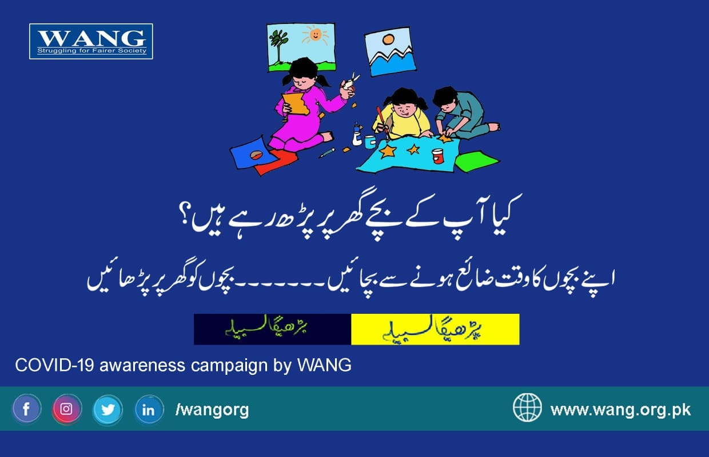

تحریر، خلیل رونجھو
کورونا وائرس سے پیدا ہونے والی صورتحال معاشی اور سماجی خطرہ بن کر پوری دنیا کو مکمل طور پر اپنے شکنجے میں لے چکی ہے۔ سماجی رابطوں میں کمی کو یقینی بنانے کے لیے کیے جانے والے اقدامات لوگوں کے تحفظ کے لیے تو ضروری ہیں مگر اس سے معیشت، معمولات زندگی کے بعد سب سے زیادہ دنیا بھر کا تعلیمی نظام متاثر ہوا ہے،عالمی ادارے یونیسکو کی حالیہ رپور ٹ کے مطابق دنیا بھر کے اسکولوں اور یونیورسٹیوں کے طالب علموں کی تعداد ڈیڑھ ارب سے زیادہ ہے جن میں تقریباً 74 کروڑ لڑکیاں ہیں۔ ان میں سے گیارہ کروڑ سے زیادہ لڑکیوں کا تعلق دنیا کے پس ماندہ ملکوں سے ہے، جہاں لڑکیوں کا اسکول جانا ویسے ہی ایک بڑا مسئلہ ہے۔ادارے کے مطابق دینا بھر کے کورونا وائر س کی وجہ سے دنیا بھر کے 110 کے قریب ممالک میں اسکولز بند ہوگئے ہیں جن میں 85 کڑور سے زائد یعنی دنیا کے مجموعی طلباء میں سے آدھی تعداد میں طلباء اسکولوں،کالجوں و یونیورسٹیوں جانے سے محروم ہوگئے ہیں جو ایک بہت بڑا چیلنج ہے۔
دنیا بھر میں کورونا وائرس کی تباہ کاریوں نے نہ صرف دنیا بدل کر رکھ دی بلکہ کار ِدنیاہی لپیٹ دیا ہے،اس وبا ء کے وار سے پاکستان بھی محفوظ نہ رہ سکا اور دیگر کاروبار زندگی کے ساتھ تعلیمی اداروں میں بھی تالا لگ گیاپاکستان میں فروری میں پہلا کیس روپورٹ ہونے کے بعد کورونا وائرس کے پھیلاؤ کو روکنے کے لیے ابتدائی طور پر کیے جانے والے اقدامات کے طور پر سب سے پہلے صوبہ سندھ کی طرف سے مارچ سے اسکول بند کرنے کا اعلان کیا گیا اس کے بعد وفاق سمیت دیگر صوبوں نے بھی اس عالمی وباء کو برقرار رہنے کی وجہ سے مختلف نوٹیفکیشن کے ذریعے تمام تر تعلیمی اداروں کوتاحال بند رکھا ہے،اب گزشتہ روز کی قومی کوآرڈنیشن کمیٹی کی میٹنگ کے بعد وزیر تعلیم شفقت محمود کے علامیہ کے مطابق پاکستان میں تمام تر تعلیمی ادارے 16جولائی تک بند رہیں گے،اس دوران ملک بھر کے کروڑوں طلباء تعلیمی عمل سے دو رہیں گے جن کا گزشتہ مہینے اور مذید سولہ جولائی تک کوئی پانچ ماہ کا عرصہ شمار ہوگا۔
اس تمام تر صورتحال میں جہاں ملک بھر میں تعلیمی عمل شدید متاثر ہوا ہے وہی پر صوبہ بلوچستا ن جوکہ شرح تعلیم کے حوالے سے باقی صوبوں سے پیچھے ہے یہاں کے طلباء شدید متاثر ہوئے ہیں بلوچستان کے سرکاری اسکولوں میں پرائمری سے مڈل تک امتحانی عمل مکمل ہوچکا تھا،تاہم طلباء سالانہ امتحان رزلٹ کے انتظار میں تھے،بلوچستان بھر میں میٹرک کے سالانہ امتحان جاری تھے جن کے کوئی پانچ کے قریب پیپز باقی تھی وہ لاک ڈاون و ٹرانسپورٹیشن متاثر ہوئے جن کو بعدمیں منسوخ کردیے گے ہیں،اس طرح مئی میں انٹرمیڈیٹ کے امتحانات منعقد ہونے تھے جوکہ ملتوی کردیے گئے ہیں،بلوچستان بھر میں نئے تعلیمی سال کے موقع پر داخلہ مہم کا آغاز مارچ سے ہونا تھا جس کی تمام تر تیاری کرلی گئی تھی لیکن وہ موجودہ حالات کی وجہ سے شدید متاثر ہوئی ہے اس کے لیے یہ خدشہ ظاہر کیا جارہاہے کہ اس بار لاکھوں بچے اسکولوں میں داخلے سے رہے جائیں گے جس سے صوبے کی شرح داخلہ میں اثر پڑھ سکتاہے،اس کے ساتھ بلوچستان بھر میں سرکاری و نجی اسکولز،کالجز،یونیورسٹیاں سب بند ہیں جس کی وجہ سے طلباء کا تعلیمی سال بری طرح متاثر ہورہاہے۔
اس تمام تر عالمی و ملکی صورتحال میں حکومت پاکستان نے بھی کوشش کی ہے کہ موجوہ حالات میں حب طلباء کمرہ جماعت تک پہنچ نہیں سکتے اس لیے اسکولوں،یونیورسٹی کے طلباء تک تعلیم پہنچانے کے لیے متبادل طریقے ڈھونڈلیں جائیں تاکہ تعلیمی عمل اور علمی معیار متاثر نہ ہو اور س سے تعلیم کا جو نقصان ہوا اس کا ازالہ کرنے کے لیے نیا بھر کی طرح پاکستان میں نے آن لائن تدریس کے حوالے سے کچھ اقدامات کیے گئے،تاہم خاطر خواہ پیش رفت دکھائی نہ دی،اس کی ایک بڑی وجہ ملک بھر میں انٹرنیٹ سہولیات کی عدم دستیابی ہے، موجودہ صورتحال نے ہمیں اس بات کا احساس دلایا ہے کہ اب ہمیں ٹیکنالوجی کے تقاضوں کے مطابق اپنے معیار کو بلند کرنا ہوگا۔ وہ ملک اور اس کے تعلیمی ادارے جو ڈیجیٹل کشتی میں سوار نہیں ہوسکے تھے وہ آج پیچھے رہ گئے ہیں کیونکہ انہیں بچوں کے تعلیمی تسلسل کو جاری رکھنے کے متبادل طریقوں کو مرتب دینے میں خاصی مشکل پیش آرہی ہے،تاہم وفاقی حکومت نے بچوں کی تعلیم کے لیے فوری طور پر ٹیلی تعلیم کے نام سے نیاٹی وی چینل لانچ کیا،بہت ساری موبائل ایپلیکشن بنائی تاکہ کسی نہ کسی طرح بچوں کے وقت کے ضائع ہونے سے بچایا جاسکے صوبہ بلوچستا ن میں اس صورتحا ل میں ہونے میں تعلیمی نقصان کو کم رکھنے کے لیے محکمہ تعلیم نے میرا گھر میرا سکول کا منصوبہ سامنے آَیاجس میں والدین،اساتذہ اور کمیونٹی کے افراد سے اپیل کی گی کہ وہ اپنے گھروں میں احتیاطی تدابیر کو اپناتے ہوئے بچوں کی تعلیم کا مناسب بندوبست کریں،جس میں متحرک اساتذہ کرام اور والدین نے کسی حد تک دلچسپی دیکھائی،اساتذہ کے لیے آن لائن ٹریننگ کورسز کا انعقاد کیا گیا،اور اس طرح تعلیمی داخلہ مہم کو متاثر ہونے سے بچانے کے لیے آن لائن داخلے کی مہم شروع کی لیکن بلوچستان کے بیشتر علاقوں میں انٹرنیٹ کی عدم دستبابی کی وجہ سے اس کے کوئی خاطر خواہ نتایج برآمد نہیں ہوئے۔
کورونا وائرس کے مطلق عالمی ہنگامی صورتحال مسلسل جاری ہے،سوائے عوامی جہوریہ چین کے تمام ممالک اس وبا ء سے نمٹنے میں ابھی تک حالت جنگ میں ہیں جن میں ان ممالک کی پہلی ترجعی اپنی عوام الناس کو اس مرض سے بچانا ہے اور اس کو مذید پھیلنے سے روکناہے،جس کا مطلب ہے کہ ابھی تک صورتحال غیر یقینی ہے، ائندہ چند ہفتے میں اگر صورتحال بہتری کی طرف گامزن ہوئی تو شائد ہی ان حالات میں جہاں دنیا بھر میں تعلیمی اداروں کو کھولنے کا جائز ہ لیا جائے وہی پر پاکستان میں بھی تعلیمی اداروں کی بحالی کے لیے اقدامات ضرور کیے جائیں گے۔
قومی رابطہ کمیٹی کے اجلاس کے بعد کی گزشتہ دنوں کی نئی حکمت عملی کے تحت کہ اب شائد جولائی کے آخر سے ملک بھر کے تعلیمی ادارے نئے قوائد و ضوابط کے تحت کھولے جائیں جس میں شدید گرمی کے موسم کی وجہ سے اسکولوں کے نئے مقرر کیے جائیں مگر یہ کہنا قبل ازوقت ہے جبکہ تک کورونا وائرس کے شکار مریضوں کی تعداد عالمی و ملکی سطح پر کم ہونا شروع نہ ہوجائے کیونکہ اس صورتحال میں کوئی ملک بھی اس قدرتی آفت کے سامنے بچوں کی زندگی کو خطرے میں نہیں ڈال سکے گا پاکستان میں جہاں گزشتہ دو ماہ سے اسکولوں میں تعلیمی سرگرمیاں بند ہیں اور مذید دو مہینے سے زاہد عرصہ بند ہونگے جس کی وجہ سے تمام تر بچے گھر پر محصور ہیں،وہی پر والدین اور بچے خود بھی اچھی طرح جانتے ہیں کہ یہ ایک وبائی ایمرجنسی صورتحال ہے،وائرس کا زیادہ پھیلاولوگوں کے ایک دوسرے سے ٹیچ ہونے یا چھونے کی صورت میں یاپھر متاثرہ شخص کی چھوئی ہوئی کسی چیز پر جراثیم لگنے کی صورت میں ہوتاہے،بچے کسی بھی قدرتی آفت کی صورت میں سے سے زیادہ ولنرابیل یقینی کمزور ہوتے ہیں اس لیے پاکستان سمیت پوری دنیا نے بچوں کی پڑھائی سے زیادہ اس کی صحت کو سامنے رکھتے ہوئے اسکولز بند رکھنے کا فیصلہ کیا گیاہے۔
اس بندش سے تعلیمی عمل کو کم از کم متاثر ہونے سے بچانے کے لیے اب زیادہ تر ذمہ داری ادارے اور ٹیچر کے کاندھوں سے ہٹ کر والدین اور طلبہ وطالبات کے کاندھوں پر آگئی ہے،یقینا گزشتہ دو ماہ سے والدین نے گھر کے اندر بچوں کے سیکھنے کے لیے بہت سارے اقدامات کیے ہونگے،لیکن اس صورتحال میں والدین کو بچوں کی تعلیم کے لیے مذید فکر مند ہونے کی ضرورت ہے،اس حوالے سے علاقے کے تعلیم دوست سماجی کارکنان کے ساتھ بنیادی، مرکزی اور فعال کردار والدین کا بھی ہے کہ وہ اپنے بچوں کو کھیل کود میں وقت ضائع کرنے کے بجائے، گھر میں مصروف رکھیں اور باقاعدگی سے ان سے تعلیمی نصاب مکمل کروائیں۔ ایسی صورتحال میں بچوں کے والدین پر عائد ہوتی ہے کہ وہ اپنے بچوں کے لیے گھر میں ہی تعلیمی سہولیات کا بندوبست کریں، گھر میں موجود پڑھے لکھے افراد اپنے بچوں کو نئے کورسز کو سمجھنے میں مدد دیں۔
اگر ایسا نہ کیا گیا تو نئی کلاسز کی ابتدا ہی سے یہ جو وقفہ آیا ہے آپ کے بچوں کی نفسیات پہ برا اثر ڈالے گا وہ اپنی روزمرہ تعلیمی مصروفیات کو بھول کر کھیل کود اور دوسری سرگرمیوں میں مصروف رہیں گے، اور جب دوبارہ بعد از تعطیلات کلاسز کا آغاز کیا جائیگا تو آپکے بچوں کو اس ماحول میں ایڈجسٹ ہونے میں کافی مشکلات کا سامنا کرنا پڑے گا،ان حالات میں یہ سمجھنا بھی ضروری ہے کہ ہم غریب ملک کے شہری ہیں اور حکومتی اداروں کے پاس اتنی بڑی صلاحتیں نہیں کہ اس طرح کی قدرتی آفات کے متعلق موثر ہنگامی منصوبہ بندی کرسکے،یا ہونے والے تقصان کو فوری ازالہ کرسکیں اس لیے ہماری یہ کوشش ہونی چاہیے کہ جو کچھ ہمارے ہاتھ میں ہے ہم اس صوررتحال سے باہر آنے کم سے کم تقصان میں نکلیں کیونکہ اس آفت کے خاتمے تک بہت سارے دنیا کے ممالک میں معاشی تبدیلیاں رونما ہوسکتی ہیں،امیر ترین ممالک شدید بحران کا شکار ہوجائیں گے ہم تو ویسے ہی غریب و پسماندہ ملک ہیں